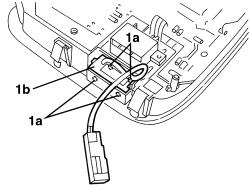

5570T14 MOBILE PHONE HANDS-FREE SYSTEM MICROPHONE - R R
- Path
- Procedures > 55 ELECTRICAL EQUIPMENT > 5570 ACCESSORIES > 5570T CAR RADIO/CAR TELEPHONE/VIDEO > 5570T14 MOBILE PHONE HANDS-FREE SYSTEM MICROPHONE - R R
- Kind
- repair procedure (removal / refitting; the operation number is the code)
- Applies to
- all engines; all production periods
- Interactive page
- https://sloeber94.github.io/elrnDB-aBrrSpdr/en/#/946002443
Applies to: all engines; all production periods
 Removing
Removing
 Refitting
RefittingOp. 7040E40 FRONT COURTESY LIGHT - R.R.
1. Release the inner retainers (1a) and remove the microphone (1b).

Applies to: all engines; all production periods
Refitting
Removing- Check that the microphone is not damaged.
- Position the microphone and attach the inner retainers.